조경기사 (2012-05-20 기출문제)
1과목: 조경사
1. 일본 침전조정원의 원형으로 평안에 위치한 「등원양방」의 저택은?
- 동삼조전
- 평등원
- 삼보원
- 정유리사
(정답률: 61%)

2. 일본 용안사 석정과 관련이 없는 것은?
- 암석
- 장방형
- 추상적 고산수
- 침전조
(정답률: 67%)
3. 고대 그리스 아도니스원(Adonis Garden)은 어느 정원 형태의 원형인가?
- 옥상정원
- 중세의 수도원 정원
- 고대 로마의 페리스틸리움
- 파티오(patio)식 정원
(정답률: 77%)
4. 다음 중 5계단으로 이루어진 중국의 계단식 정원(階段式 庭園)은?
- 영수궁의 건륭화원(乾隆花園)
- 북해(北海)의 단성(團城)
- 자금성(紫金城)의 북쪽에 있는 경산(京山)
- 자금성 홍안전의 어화원(御化園)
(정답률: 58%)
5. 다음 Lancelot Brown의 설계관에 관한 설명으로 옳지 않은 것은?
- 부드러운 기복의 잔디밭
- 자수화단 설치로 색채효과
- 거울같이 잔잔한 수면
- 빛과 그늘의 대조
(정답률: 65%)
6. 다음 고려시대 누정 가운데 궁궐 내에 조영된 것은?
- 상춘정
- 장원정
- 향림정
- 부벽루
(정답률: 51%)
7. 돌을 절구나 도가니처럼 다듬어 석연지나 물거울로 사용하는 전통 점경물은?
- 식석
- 돌확
- 석분
- 대석
(정답률: 58%)
8. 스페인 헤네랄리페의 주정은 무엇인가?
- 사이프레스의 파티오(Patio de los Ciperses)
- 수로의 파티오(Court of the Canal)
- 연못의 파티오(Court of the Myrtles)
- 다라하의 파티오(Patio de Daraxa)
(정답률: 48%)
9. 우리나라 왕명(王名)과 그들이 조성했거나 변형시킨 작품과의 연결이 옳지 않은 것은?
- 조선 세조 - 창덕궁 후원
- 고려 충혜왕 - 방장선상
- 조선 태종 - 경회루
- 연산군 - 만세산
(정답률: 50%)
10. 원경이 한눈에 드러나지 않도록 하며 갑자기 넓은 공간을 출현시켜 경관의 대비를 이루도록 하는 중국의 원림경관 구성기법은?
- 억경(抑景)
- 투경(透景)
- 협경(夾景)
- 대경(對景)
(정답률: 55%)
11. 다음 한국정원의 특징에 관한 설명으로 가장 거리가 먼 것은?
- 중국정원의 영향을 받았다.
- 공간의 처리가 직선적이다.
- 정원의 수법은 자연환경의 극복과 재창조를 목적으로 한다.
- 풍수지리설(風水地理說)과 음양오행설(陰陽五行說) 의 영향을 받았다.
(정답률: 66%)
12. 다음 정원의 경영자와 조성년대가 맞지 않은 것은?
- 소쇄원 : 양산보, 1520~1557년
- 서석지원 : 정영방, 1610~1636년
- 문수원선원 : 이자현, 1090~1110년
- 부용동 정원 : 윤선도, 1301~1327년
(정답률: 59%)
13. 다음 중 1930년대 미국의 캘리포니아 스타일과 가장 관련이 깊은 조경가는?
- 찰스 플래트(Charles Platt)
- 토마스 처치(Thomas Church)
- 헨리 라이트(Henry Wright)
- 다니엘 번함(Daniel Burnham)
(정답률: 59%)
14. 인도 무굴왕조 자한기르 시대에 조영되어 물의 약동성, 히말라야 산록의 조망, 비스타의 강조 그리고 단풍나무의 녹음과 가을풍경 등이 특징인 정원은?
- 샤리마르-바그
- 니샤트-바그
- 아차발-바그
- 이티맛드-우드-다우라묘
(정답률: 47%)
15. 영국 정형식 정원의 특징으로 옳지 않은 것은?
- 마운드는 기하학적 규칙성을 가진 인공적 언덕이었다.
- 조각이나 병, 화분 등으로 테라스, 원로를 장식했다.
- 정원의 대부분은 도시 근로자의 휴식을 위한 것이다.
- 산책로는 자갈, 잔디, 타일, 판석 등으로 대개 포장을 하였다.
(정답률: 68%)
16. 다음 중 구례 운조루 정원의 특징에 관한 설명으로 가장 거리가 먼 것은?
- 운조루는 후정에 있는 누각이다.
- 바깥마당에 장방형의 연못이 있다.
- 낙안군수 유이주가 조성하였다.
- 「전라구례오미동가도」 에 정원의 모습이 남아 있다.
(정답률: 42%)
17. 독일의 폴크스파르크(Volkspark)에 관한 설명 중 옳지 않은 것은?
- 20세기초에 루드비히레서(L. Lesser)가 제창하였다.
- 국민의 전계층을 대상으로 하는 심신단련용을 위한 녹지의 일종이다.
- 면적규모는 10ha 이상을 원칙으로 하였다.
- 자연풍경식 정원양식을 주축으로 하였다.
(정답률: 50%)
18. 영국의 전원시인 센스톤(shenstone)은 정원미를 세 가지로 나누었는데 다음 중 여기에 해당되지 않는 것은?
- 장미(壯美, sublime)
- 우미(優美, beautiful)
- 음울 또는 한적(陰鬱 또는 閑寂, melancholy orpensive)
- 별미(別味, unique)
(정답률: 57%)
19. 수목에 관한 한자 중 근리(槿籬)란 무엇을 의미하는가?
- 동백나무 생울타리
- 대나무 생울타리
- 무궁화 생울타리
- 탱자나무 생울타리
(정답률: 60%)
20. 조경관련 고문헌을 저술한 인물 연결이 옳지 않은 것은?
- 서유거 - 임원경제지
- 계성 - 원야
- 왕세정 - 낙양명원기
- 귤준망 - 작정기
(정답률: 64%)
2과목: 조경계획
21. 관개용 저수지나 댐 주변의 유원지 개발시 일반적으로 가장 큰 장애요인이 될 수 있는 것은?
- 접근도가 낮다.
- 주변경관이 단조롭다.
- 수상 및 육지에 시설을 하여야 하므로 설계가 어렵다.
- 만수시와 갈수시의 수심차이가 심하여 수변 위락시설의 적극적 이용이 힘들다.
(정답률: 65%)
22. 자연생태ㆍ경관보전지역의 관리, 생물다양성의 보전, 자연자산의 관리, 생태계보전협력금 등을 규정한 법규는?
- 자연환경보전법
- 환경정책기본법
- 자연공원법
- 국토의 계획 및 이용에 관한 법률
(정답률: 65%)
23. 다음은 국토의 계획 및 이용에 관한 법률 시행령에서 용도지역 중 주거지역의 세분사항이다. ( )안에 알맞은 것은?
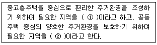
- ① 제2종전용주거지역, ② 제3종일반주거지역
- ① 제3종전용주거지역, ② 제2종일반주거지역
- ① 제3종일반주거지역, ② 제2종전용주거지역
- ① 제2종일반주거지역, ② 제3종전용주거지역
(정답률: 38%)
24. 스키장의 입지기준에서 지형사면의 방향으로 가장 양호한 것은?
- 서북향
- 서남향
- 북동향
- 남동향
(정답률: 67%)
25. 다음 중 환경심리학에 관한 설명 중 옳지 않은 것은?
- 환경과 인간행위 상호간의 관계성을 연구한다.
- 사회심리학과 많은 공동 관심분야를 지니고 있다.
- 이론적 연구에는 관심이 없고 현실적 문제 해결에만 관심을 둔다.
- 다소 정밀하지 않더라도 문제해결에 도움이 되는 가능한 모든 연구방법을 사용한다.
(정답률: 77%)
26. 다음 중 환경영향평가의 어려움에 관한 설명으로 옳지 않은 것은?
- 일정행위로 인해 초래되는 환경적 영향에 대한 과학적 자료가 미흡하다.
- 쾌적함, 아름다움 등의 추상적 가치에 관한 정량적 분석이 어렵다.
- 환경적 영향을 충분히 분석하기 위하여 어느 만큼의 자료가 수집되어야 하는가에 대한 지식이 부족하다.
- 건설 후에 평가를 하게 되므로 완화대책을 시행하는데 비용이 많이 든다.
(정답률: 70%)
27. 일반적으로 물체를 자극으로부터 지각하는 과정으로 맞는 것은?
- 지각(perception) → 반응(reaction) → 판단(judgement)
- 반응(reaction) → 지각(perception) → 판단(judgement)
- 지각(perception) → 판단(judgement) → 반응(reaction)
- 판단(judgement) → 지각(perception) → 반응(reaction)
(정답률: 59%)
28. 특정 공원의 연간 수요량을 알아보기 위하여 요인분석 모델을 사용한 결과 관계 함수식이 다음과 같았다. “Y=0.4+0.2X1+0.25X2+3X3+0.5X4" 만약 1ha의 식재지를 포함한 공원의 면적이 3ha, 공원내 시설물이 20개, 입장료가 100원이라면 이 공원의 연간 수요량은 얼마인가?(단, Y : 연간수요량(명), X1 : 공원의 면적(ha), X2 : 공원내 시설물의 개수(개), X3 : 공원내 식재지 면적/공원의 면적, X4 : 입장료(원))
- 54명
- 55명
- 56명
- 57명
(정답률: 56%)
29. 다음은 자연공원법상 사용되는 용어의 설명이다. ( )안에 알맞은 것은?
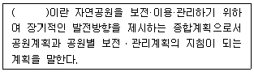
- 공원개발계획
- 공원기본계획
- 공원보전계획
- 공원보존계획
(정답률: 63%)
30. 다음 중 용적률을 나타내는 개념과 거리가 먼 것은?
- 연상면적 ÷ 대지면적
- 평균층수 × 건폐율
- 호수밀도 × 1호당 면적
- 총 층수 ÷ 건물 동수
(정답률: 53%)
31. 자전거 이용시설의 구조ㆍ시설 기준에 관한 규칙상의 자전거도로 설치에 관한 설명 중 옳지 않은 것은?
- 자전거도로의 폭은 하나의 차로를 기준으로 1.5m 이상으로 한다.(다만, 지역상황 등에 따라 부득이하다고 인정되는 경우에는 1.2m 이상으로 할 수 있다.)
- 2% 미만의 경사도에 설계속도 20~30km/h를 가진 도로에서의 하향경사 정지시거는 20m 이다.
- 시속 30km의 설계속도를 가진 도로에서의 곡선반경은 27m이상 두어야 한다.
- 7% 이상의 종단경사를 가진 도로는 제한길이를 170m 이하로 유지하여야 한다.
(정답률: 67%)
32. 정밀토양도에서 토양의 명칭을 “Mn C2"라고 명명하였을 경우'2'가 뜻하는 바는?
- 침식정도
- 경사도
- 비옥도
- 배수정도
(정답률: 54%)
33. 다음 중 페리(Perry)가 주장한 근린주구이론에서 하나의 근린단위가 갖고 있어야 하는 기본요소에 해당하지 않는 것은?
- 운동장
- 완충녹지
- 작은 공원
- 소규모 가게
(정답률: 53%)
34. 동선계획을 구체화하는 과정에서 공간의 경험과 체험이 연속적이 되도록 기능과 시설을 배치하고자 하는 것을 무엇이라 하는가?
- Sequence
- Scale
- Contrast
- Context
(정답률: 71%)
35. 조경기본계획안이 작성되면 설계자 스스로가 기본 계획안에 대한 내적 평가를 하게 된다. 이 때 평가의 일반적 기준이 될 수 없는 것은?
- 분석·종합의 기준
- 표현기법
- 계획목표
- 프로그램
(정답률: 53%)
36. 래드번 도시계획에 관한 설명으로 옳지 않은 것은?
- 슈퍼블럭을 채택
- 통과교통을 단지내로 통과 배제
- 보도망의 형성 및 보도와 차도의 입체적 분리
- Howard에 의해 조성된 대표적인 전원도시
(정답률: 62%)
37. 뉴먼(Newman)은 주거단지 계획에서 환경심리학적 연구를 응용하여 범죄 발생률을 줄이고자 하였다. 뉴먼이 적용한 가장 중요한 개념은?
- 영역성(territoriality)
- 개인적 공간(personal space)
- 혼잡성(crowding)
- 프라이버시(privacy)
(정답률: 69%)
38. 다음 인문생태적 조경이론(Human Ecological Planning)을 설명한 것 중 틀린 것은?
- 미국의 조경가 맥하그(Ian McHarg)에 의해 주도 되었다.
- 인문주의적 조경이론이다.
- 생태환경과 이용자들을 위해 가장 적합한 환경을 추구하고자 한다.
- 물리, 생물, 문화적 시스템을 서로 연관지어 설명하고자 한다.
(정답률: 53%)
39. 도시계획시설의 결정·구조 및 설치기준에 관한 규칙상 광장의 구조 및 설치기준에 대한 설명이 틀린 것은?
- 경관광장에는 주민의 사교·오락·휴식 등을 위한 시설을 설치하여야 하며, 광장 인근에 당해 지역을 통과하는 교통량을 처리하기 위한 도로를 배치하지 아니할 것
- 교차점광장에는 횡단보행자의 통행에 지장이 없는 시설을 설치하고,「도로법」의 규정에 의한 도로부속물을 설치할 수 있도록 할 것
- 교차점광장은 자동차의 설계속도에 의한 곡선반경 이상이 되도록 하여 교통처리가 원활히 이루어지도록 할 것
- 역전광장 및 주요시설광장에는 이용자를 위한 보도·차도·택시정류장·버스정류장·휴식시설 등을 설치할 것
(정답률: 49%)
40. 공원과 공원을 서로“파크웨이(park way)"로 연결 시키도록 하는 공원계통의 이념을 확립시킨 사람은?(오류 신고가 접수된 문제입니다. 반드시 정답과 해설을 확인하시기 바랍니다.)
- Humphrey Repton
- William Kent
- Lancelet Brown
- F.L Olmsted
(정답률: 60%)
3과목: 조경설계
41. 다음 설명 중 ( )안에 적합한 것은?
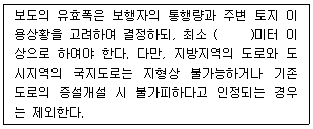
- 1.0
- 1.2
- 1.5
- 2.0
(정답률: 37%)
42. 소음이 발생하는 작업에 대한 설계시 산업안전보건기준에 관한 규칙에 따라 1일 8시간 작업을 기준으로 몇 데시벨 이상일 경우 소음작업으로 구분 하는가?
- 80
- 85
- 90
- 100
(정답률: 55%)
43. 렐프(Relph)는 장소성을 설명하는 개념으로 내부성과 외부성을 거론한 바 있다. 다음 중 내부성과 관련하여 렐프가 제시한 유형이 아닌 것은?
- 직접적 내부성
- 존재적 내부성
- 감정적 내부성
- 행동적 내부성
(정답률: 45%)
44. 다음 중 대칭적(symmetrical)인 구도로 가장 안정 감을 갖고 있는 것은?
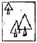
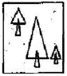
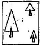
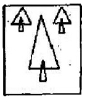
(정답률: 72%)
45. 다음 조경설계기준상의 생태통로 중 암거형 종류에 대한 설명으로 옳지 않은 것은?
- 박스형 암거 : 농촌의 농로 또는 수로의 역할을 겸할 수 있는 폭 3~4m 내외의 사각형 구조물로서 너구리의 이용에 유리하다.
- 파이프형 암거 : 지름 1m 내외의 콘크리트 또는 철재 원형관으로서 너구리, 족제비, 설치류의 이용에 유리하다.
- 수로형 암거 : 콘크리트 배수로를 보완한 지름 1~2m 의 사각 구조물로서 동물이 물에 빠지지 않고 이동하도록 벽에 선반을 설치해 준다. 수달, 삵, 너구리, 족제비, 설치류의 이용에 유리하다.
- 저면습지용 암거 : 양서류 또는 파충류의 이동을 확보하기 위한 구조로서 0.2~0.5m 폭으로 조성하며, 배수구조물은 별도로 조성한다. 소형동물의 이동을 겸한 터널인 경우는 3~5m 크기로 한다.
(정답률: 44%)
46. 건물의 전면(前面) 전부를 보며 심리적 압박감이 없어 질 수 있는 거리는 건물에서부터 최소 얼마의 거리를 떨어져서 보아야 하는가?
- 건물높이의 1.0배
- 건물높이의 2.0배
- 건물높이의 3.0배
- 건물높이의 4.0배
(정답률: 36%)
47. 경관을 구성하는 지배적 요소 중 경관의 우세요소 (dominance elements)에 속하지 않는 것은?
- 형태(form)
- 질감(texture)
- 다양성(variety)
- 선(line)
(정답률: 69%)
48. 목재를 이용한 시설물 설계에서 고려해야 하는 설계기준이 아닌 것은?
- 전단강도를 요구할 경우에는 직각방향으로 제재한다.
- 도포법은 침지법보다 경제적인 방부처리 방법이다.
- 가급적 목재는 이어쓰기는 피하는 것이 효율적이다.
- 내구력이 떨어지고 품질이 균일하지 못한 특성이 있다.
(정답률: 39%)
49. 색의 3속성 중 색의 순수한 정도, 색채의 포화상태 색채의 강약을 나타내는 성질은?
- 색상
- 명도
- 채도
- 명암
(정답률: 57%)
50. 한색과 난색의 감정효과 - 거리와 크기감 - 시간의 경과감에 대한 연결이 맞는 것은?
- 한색 : 따뜻한 색, 흥분색 - 멀고 작게 - 느리게 느껴짐
- 난색 : 차가운 색, 진정색 - 가깝고 크게 - 느리게 느껴짐
- 한색 : 차가운 색, 진정색 - 멀고 작게 - 빠르게 느껴짐
- 난색 : 따뜻한 색, 흥분색 - 가깝고 크게 - 빠르게 느껴짐
(정답률: 42%)
51. 다음 중 Albedo 값이 높은 것부터 낮은 것으로 옳게 나열 한 것은?
- 눈 → 숲 → 바다 → 마른모래
- 마른모래 → 숲 → 눈 → 바다
- 눈 → 마른모래 → 숲 → 바다
- 숲 → 바다 → 마른모래 → 눈
(정답률: 61%)
52. 다음 중 조경설계기준상의 축구장 배치 방법으로 가장 적합한 것은?
- 장축을 남북 방향으로 길게 배치한다.
- 장축을 동서 방향으로 길게 배치한다.
- 장축을 북서-남동 방향으로 길게 배치한다
- 장축을 북동-남서 방향으로 길게 배치한다.
(정답률: 65%)
53. 다음 중 설계 도면의 작성 목적으로 가장 거리가 먼 것은?
- 시공자가 정확하게 공사하기 위해
- 인ㆍ허가에 필요해서
- 설계자의 설계능력을 표시하기 위해
- 시방서 작성과 공사비 산정을 위해
(정답률: 61%)
54. 다음 그림과 같은 도형에서 화살표 방향에서 본 투상을 정면으로 할 경우 우측면도로 올바른 것은?
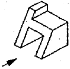
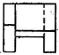
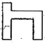
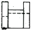
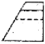
(정답률: 66%)
55. 200m2의 대지면적에 건축면적 50m2인 4층짜리 건물에 대한 건폐율은?
- 25%
- 50%
- 100%
- 200%
(정답률: 53%)
56. 조경설계기준 상의 환경조형시설에 관한 설명으로 틀린 것은?
- 환경조형시설은 도시옥외공간 및 주택단지 등 공적 공간에 설치되는 예술작품으로서 미술장식품, 순수창작 조형물, 기능성 환경조형물, 모뉴멘트 등을 말한다.
- 환경조형시설은 그 내용과 형식에 있어서 설치장소의 환경맥락과 지역주민의 정서에 적합하여야 하며, 공공성 있는 조형물로서 본래의 설치 목적과 취지를 반영하도록 한다.
- 미술장식품은 문화예술진흥법에 따라 공동주택단지 등에 설치되는 조형예술품과 벽화, 분수대, 상징탑 등의 환경조형물로서 관련조례에 따라 심의 등의 절차를 필요로 하는 시설을 말한다.
- 기능성 환경조형물은 시계탑, 조명기구, 문주 등 본래 시설물이 지니는 기능을 충족시키면서 조형적 가치와 의미가 충분히 발휘되도록 설계한 환경조형물이며 관련조례에 따라 심의 등의 절차를 필요로 한다.
(정답률: 43%)
57. 다음 중 특이성 비(uniqueness ratio)를 통하여 계곡(하천)의 경관가치를 평가한 사람은?
- Iverson
- halprin
- Leopold
- McHarg
(정답률: 66%)
58. 제도 용지에 대한 설명으로 옳지 않은 것은?
- A2용지의 크기는 A0의 1/4 이다.
- A0 용지의 넓이는 약 1m2이다
- 제도 용지의 가로아 세로의 비는 약 √2:1 이다.
- 큰 도면을 서류철용으로 접을 때에는 A3의 크기로 접는 것을 원칙으로 한다..
(정답률: 56%)
59. 조각, 건축, 환경, 조경 등 환경관련 예술분야들이 한 작품 속에 융합된 형태의 작업을 나타내고, 팝아트(pop art), 설치미술 양자의 성격을 동시에 가지며, 서술적 건축(narrative architecture), 녹색건축(green architecture)을 말하는 설계 그룹 또는 사람은?
- SITE(Sculpture In The Environment)
- 발켄버그(Valkenburgh, M. V.)
- 에밀리오 암바즈(Ambasz, E.)
- 지오프리 젤리코(Jellicoe, G.)
(정답률: 59%)
60. 다음 중 현의 길이 치수 기입을 옳게 나타낸 것은?
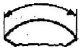
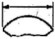
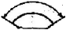
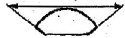
(정답률: 50%)
4과목: 조경식재
61. 사실(寫實)적 식재의 설명으로 옳지 않은 것은?
- 실존하는 자연경관을 충분히 모사하는 수법이다.
- 영국의 William Robinson이 제창한 야생원이 이에 속한다.
- 식물생태를 존중하는 군락식재를 행한다.
- 대표적인 것이 스페인의 중정이다.
(정답률: 67%)
62. 다음 중 잎보다 먼저 꽃이 피는 수종은?
- Magnolia sienoldii K. koch
- Magnolia denudata Desr.
- Magnolia obovata Thunb.
- Machilus thunbergii Siebold & Zucc.
(정답률: 52%)
63. 도장지(徒長枝)에 대한 설명으로 옳지 않은 것은?
- 부정아(不定芽)가 힘차게 자란 세력이 강한 가지이다.
- 도장지가 많으면 수형이 무질서해 진다.
- 가지중의 일부가 나무 수간을 향하여 뻗어 있는 가지이다.
- 일반적으로 조직이 연하고 약한 것이 특징이다.
(정답률: 41%)
64. 다음 중 상록성이 아닌 것은?
- Ilex crenata
- Ilex cornuta
- Ilex integra
- Ilex serrata
(정답률: 46%)
65. 다음 수목 중 내음성이 가장 강한 것은?
- Aucuba japonica Thunb
- Betula platyphylla var. japonica Hara
- Populus nigra var. italica Koehne
- Cornus officinalis Siebold & Zucc.
(정답률: 37%)
66. 다음 설명하는 특징의 잔디로 가장 적합한 것은?
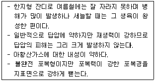
- 켄터키블루 그라스
- 벤트 그라스
- 들잔디
- 라이그라스
(정답률: 56%)
67. 옥상조경을 위한 구조적 조건과 관계 없는 것은?
- 식재층의 중량
- 수목의 중량
- 비배관리
- 방수
(정답률: 65%)
68. Hibiscus syriacus L. 에 대한 설명으로 부적합한 것은?
- 성상은 낙엽활엽관목이다.
- 음양성은 양수에 가깝다.
- 내공성은 강하다.
- 개화기는 초봄이다.
(정답률: 62%)
69. 아랍어로 자이툰이라고 하며 2002년 그리스올림픽 때 메달수여자의 월계관에 이용된 나무이다. 우리나라는 실내 조경 식물로 이용하기도 하는 것은?
- 계수나무
- 올리브나무
- 월계수
- 파피루스
(정답률: 46%)
70. 다음 중 물푸레나무, 가중나무, 느릅나무, 계수나무의 공통점은?
- 암수한그루이다.
- 우리나라 자생종이다.
- 잎은 기수1회우상복엽이다.
- 종자에는 날개가 달려있다.
(정답률: 39%)
71. 다음 수목의 광합성 작용과 관련된 설명 중 옳은 것은?
- 수목의 생존가능조도는 광보상점과 광포화점 사이에 있다.
- 수목의 생존가능조도는 광보상점 이하이다.
- 수목의 생존가능조도는 광포화점 이상이다.
- 수목의 생존가능조도는 특정한 기준 없이 지속적으로 상승한다. 제 5 목 : 조경시공구조학
(정답률: 61%)
72. 다음 피도(coverage, C)에 대한 설명 중 틀린 것은?
- 단위면적당 개체수로서, 총 조사면적 중 어떤 종의 개체수를 백분율로 나타낸 것이다.
- 각 식물종이 차지하는 투영면적을 상층, 중층, 하층으로 구분하여 조사한다.
- 브라운-블랑케(Braun-Blanquet)는 피도를 7단계로 구분하였다.
- 상대피도를 구하는 공식은 어떤 한 종의 피도를 모든 종의 피도로 나눈 후 100을 곱한 값이다.
(정답률: 42%)
73. 군집 A는 30종을 포함하고 있고, 군집 B는 22종을 포함하고 있으며, 이 두 군집에 공통된 종이 18종이라면 이 군집의 유사성을 측정하기 위한 Sorensen 계수는?
- 0.321
- 0.582
- 0.692
- 0.895
(정답률: 51%)
74. 열매가 10월에 짙은 자주빛으로 아름답고 새의 먹이로 사용되며, 정원의 하목(下木)으로 이용되는 낙엽관목의 정원수는?
- Callicarpa dichotoma K.Koch
- Ligustrum obtusifolium Siebold & Zucc.
- Abeliophyllum distichum Nakai
- Celastrus orbiculatus Thunb.
(정답률: 31%)
75. 다음 설명하는 수목의 특징에 가장 적합한 종은?
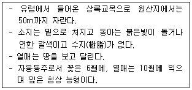
- Picea koraiensis
- Pices abies
- Picea pungsanensis
- Picea jezoensis
(정답률: 50%)
76. Pinus thunbergii Parl. 에 대한 설명으로 옳지 않은 것은?
- 동아(冬芽)는 붉은색이다.
- 수피는 흑갈색이다.
- 줄기는 단일절(單一節)이다.
- 해안지역의 평지에 많이 분포한다.
(정답률: 34%)
77. 다음 중 천근성(淺根性) 수종은?
- Zelkova serrata Makino
- Abies holophylla Maxim.
- Quercus acutissima Carruth.
- Populus eurameriana Guinier.
(정답률: 38%)
78. 다음 수목 중 들새(野鳥)의 식이식물(食餌植物)로 적합하지 않은 것은?
- Juniperus chinensis 'Kaizuka'
- Sorbus alnifolia K. Koch
- Pyracantha angustifolia C. K. Schneid.
- Cornus controversa Hemsl. ex Prain
(정답률: 44%)
79. 다음 중 줄기가 적갈색(赤褐色)계의 색채를 나타내는 수종은?
- Cedrus deodara London
- Myrica rubra Siebold & Zucc.
- Taxus cuspidata Siebold & Zucc.
- Firmiana simplex W. F. Wight
(정답률: 53%)
80. 효율적인 비오톱 배치원칙으로 옳지 않은 것은?
- 비오톱은 가능한 한 넓은 것이 좋다.
- 분할하는 경우에는 분산시키지 않는 것이 좋다.
- 불연속적인 비오톱은 생태적 통로로 연결시키는 것이 좋다.
- 비오톱의 형태는 가능한 한 선형이 좋다.
(정답률: 55%)
5과목: 조경시공구조학
81. 8ton 덤프트럭으로 자연상태에서의 토석의 단위중량 1500kg/m3인 점질토를 운반하려 할 때 1회 적재량은 약 얼마인가?(단, C 값은 0.9, L 값은 1.25 이다.)
- 4.8m3
- 10.8m3
- 6.7m3
- 4.2m3
(정답률: 44%)
82. 그림과 같은 단순보의 C지점에 대한 휨모멘트(Bending Moment)는?
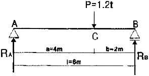
- 3.2tㆍm
- 2.4tㆍm
- 1.6tㆍm
- 0.8tㆍm
(정답률: 31%)
83. 벽돌벽의 균열에 대한 설명으로 옳지 않은 것은?
- 벽돌강도는 모르타르의 강도보다 크게 한다.
- 건물의 평면ㆍ입면의 불균형을 초래하지 않는다.
- 온도변화와 신축을 고려한 control joint를 설치한다.
- 벽돌벽의 길이, 높이에 비해 두께가 부족하거나 벽체강도가 부족하지 않도록 한다.
(정답률: 45%)
84. 다음 야장에서 측점 No.C의 기계고는 얼마인가?
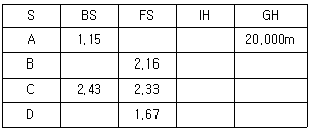
- 21.15m
- 21.25m
- 21.33m
- 21.43m
(정답률: 43%)
85. 그림과 같은 단순보에서 사다리꼴 형태의 분포하중이 작용한다. 보의 중앙점의 단면에 작용하는 굽힘 모멘트의 크기는 몇 kNm인가?
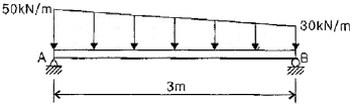
- 15
- 25
- 35
- 45
(정답률: 21%)
86. 다음 [보기]에서 설명하는 시멘트의 종류는?
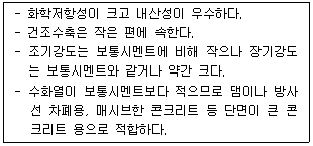
- 실리카 시멘트(Silica cement)
- 알루미나 시멘트(Alumina cement)
- 저열 포틀랜드 시멘트(low-heat portland cement)
- 중용열 포틀랜드 시멘트(moderate-heat portland cement)
(정답률: 64%)
87. 구조물에 작용하는 하중 중 바람 및 지진 또는 온난한 지방의 눈하중과 같이 구조물에 잠시 동안만 작용하는 하중을 말하는 것은?
- 이동하중
- 집중하중
- 고정하중
- 단기하중
(정답률: 65%)
88. 어느 지역 토양의 공극률(porosity) 측정을 위해 토양 60cm3을 채취하여 고형입자 부피와 수분 부피를 측정 하였더니 각각 36cm3와 12cm3였다. 이 지역 토양의 공극률(%)은?
- 10
- 20
- 30
- 40
(정답률: 34%)
89. 수목 식재 후 지주목을 설치하려 한다. 경관상 매우 중요한 위치에 적합한 지주 방법은?
- 삼각지주
- 매몰형지주
- 당김줄형지주
- 버팀형지주
(정답률: 65%)
90. 그림과 같은 장주의 좌굴길이의 크기를 옳게 표시한 것은? (단, 기중의 재질과 단면 크기는 모두 동일하다.)
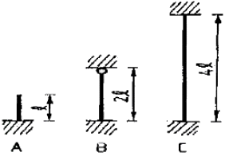
- A = B < C
- A < B < C
- B < A = C
- B < A < C
(정답률: 44%)
91. 건설공사의 원가관리에 대한 설명으로 옳지 않은 것은?
- 총원가는 공사원가와 일반관리비로 구성된다.
- 원가관리는 원가수치를 이용하여 원가절감을 목적으로 원가통계를 하는 것이다.
- 경비란 직접 물건을 만드는데 필요한 자재나 노무비용을 말한다.
- 간접노무비 비율은 계약 목적물의 규모, 내용, 공종, 기간 등에 따라 최근년도에 지불된 노임실적을 기준으로 직접노무비의 합계액에 대한 간접노무비의 비율로 산정한다.
(정답률: 48%)
92. 다음 중 소나무 각재의 압축 강도시험을 할 때 측정하지 않아도 되는 것은?
- 비열
- 비중
- 함수율
- 평균연륜 폭
(정답률: 44%)
93. 재료의 성질을 나타낸 용어에 대한 설명으로 옳지 않은 것은?
- 취성 : 작은 변형에도 파괴되는 성질
- 연성 : 재료를 두들길 때 엷게 펴지는 성질
- 강성 : 외력을 받았을 때 변형에 저항하는 성질
- 소성 : 힘을 제거해도 본래 상태로 돌아가지 않고 영구변형이 남는 성질
(정답률: 47%)
94. 시방서에 대한 설명으로 틀린 것은?
- 표준시방서는 발주자가 작성하여 시공자에게 전달한다.
- 시방서는 설계자의 의도를 시공자에게 전달하기 위해 설계도에 기재할 수 없는 사항을 기재한다.
- 공사시방서에는 특정 공사용으로 작성된 시방서로 공통시방서와 특기시방서를 포함한다.
- 재료, 공법을 정확하게 지시하고 도면과 시방서가 상이하지 않게 기록하는데 주의를 기울인다.
(정답률: 46%)
95. 다음 중 에폭시수지에 대한 특징 설명으로 옳은 것은?
- 가격이 저렴하다.
- 금속의 접착성이 좋다.
- 내수성이 좋지 못하다.
- 내약품성이 좋지 못하다.
(정답률: 52%)
96. 아파트, 지하철공사, 고속도로공사 등 대규모공사에서 지역별로 공사를 구분하여 발주하는 도급방식은?
- 공구별 분할도급
- 공정별 분할도급
- 전문공사별 분할도급
- 직종별, 공정별 분할도급
(정답률: 42%)
97. 개수로(開水路)에 대한 설명으로 옳지 않은 것은?
- 개수로의 흐름은 압력에 의하여 흐르는 것이 아니다.
- 자연하천 및 배수로 등이 자유수면을 가질 때 개수로라 한다.
- 흐름에 작용하는 중력이 수면방향의 분력에 의하여 자유수면을 가지는 흐름을 말한다.
- 지하배수관거와 같이 뚜껑이 덮여 있는 암거는 물이 일부만 차 흘러감으로 개수로라 할 수 없다.
(정답률: 65%)
98. 사질토와 점질토에 관한 특징 설명으로 옳지 않은 것은?
- 압밀속도는 점질토가 사질토 보다 느리다.
- 투수계수는 점질토가 사질토 보다 작다.
- 동결피해는 점질토가 사질토 보다 크다.
- 내부마찰각은 점질토가 사질토 보다 크다.
(정답률: 48%)
99. 다음은 축척 1:50,000의 평면도면에 그려진 3각형의 땅이다. 이 땅의 실제 면적은 약 얼마인가?
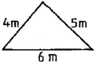
- 50 ha
- 248 ha
- 263 ha
- 320 ha
(정답률: 41%)
100. 일반적으로 석재의 흡수율이 큰 것부터 작은 순서로 옳게 나열한 것은?
- 안산암 - 사암 - 응회암 - 화강암 - 대리석
- 안산암 - 응회암 - 사암 - 화강암 - 대리석
- 응회암 - 사암 - 화강암 - 안산암 - 대리석
- 응회암 - 사암 - 안산암 - 화강암 - 대리석
(정답률: 47%)
6과목: 조경관리론
101. 조경수목의 정자, 전지, 전정 등의 관리방법으로 옳지 않은 것은?
- 수목관리시 도장지는 제거하여 준다.
- 벚나무는 수형을 잡아주기 위하여 자주 가지치기를 해야 한다.
- 정자(整姿, trimming)란 나무 전체의 모양을 일정한 양식에 따라 다듬는 작업이다.
- 봄에 꽃피는 진달래는 꽃이 진 후에 전전을 하면 다음해에 많은 꽃을 볼 수 있다.
(정답률: 60%)
102. 조경공사 현장에서 다음과 같은 안전재해 사례가 발생하였다. 다음 분석 내용으로 옳은 것은?
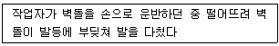
- 가해물 : 벽돌, 기인물 : 벽돌, 사고유형 : 낙하
- 가해물 : 벽돌, 기인물 : 손, 사고유형 : 충돌
- 가해물 : 벽돌, 기인물 : 손, 사고유형 : 추락
- 가해물 : 벽돌, 기인물 : 사람, 사고유형 : 비래
(정답률: 50%)
103. 다음 멀칭에 관한 설명으로 옳은 것은?
- 토양 수분의 증발을 촉진시킨다.
- 재료는 반드시 식물이어야 한다.
- 토양 온도와는 관련이 없다.
- 파쇄목 사용시 잡초의 발생이 억제된다.
(정답률: 63%)
104. 다음 중 잎을 가해하는 해충의 피해도 결정인자가 아닌 것은?
- 입목(立木)의 굵기
- 입목(立木)의 밀도
- 수령
- 수고
(정답률: 51%)
1⑤. 질산나트륨과 혼용하면 오히려 불리한 비료는?
- 황산칼륨
- 염화칼륨
- 황산암모늄
- 과린산석회
(정답률: 44%)
106. 녹병균(rust)이나 깜부기병(smut)균처럼 후막의 휴면포자인 겨울포자가 발아해서 전균사(promycelium)을 만드는 균이 소속된 분류군은?
- 자낭균류
- 담자균류
- 접합균류
- 불완전균류
(정답률: 41%)
107. 바람압력에 의하여 살포하는 방법으로 약제의 손실이 적고, 균일하게 살포하는 방법은?
- 분무법(spray)
- 연무법(fog machine)
- 침지법(dipping)
- 미스트법(mist spray)
(정답률: 42%)
108. 다음 중 빛의 조절이나 통제가 용이하며, 색채연출이 우수하지만, 고출력의 높은 전압에서만 작동이 가능하므로 정원, 광장 등에는 사용이 곤란한 옥외 조명은?
- 백열등
- 형광등
- 수은등
- 금속할로겐등
(정답률: 53%)
109. 미끄럼판에 사용되는 F.R.P 제품의 일반적 성질 중 물리적 성질이 아닌 것은?
- 내열성
- 압축강도
- 인장강도
- 내약품성
(정답률: 64%)
110. 다음 중 신경독 살충제는?
- 제충국제
- 기계유유제
- 유기수은제
- 클로로피크린
(정답률: 46%)
111. 조경수목 보호관리를 위한 엽면시비의 설명으로 옳지 않은 것은?
- 엽면살포는 비오는 날 하는 것이 좋다.
- 미량원소 부족시 엽면시비의 효과가 크게 나타난다.
- 잎이 흡수하는 양분은 극히 소량이므로 주로 미량원소의 빠른 효과를 위하여 엽면 살포한다.
- 엽면시비는 많은 양의 비료성분을 충분히 공급하지 못하므로 다량원소의 시비에는 적합하지 않다.
(정답률: 56%)
112. 수목병과 매개충이 바르게 짝지어지지 않은 것은?
- 대추나무 빗자루병 - 담배장님노린재
- 오동나무 빗자루병 - 담배장님노린재
- 쥐똥나무 빗자루병 - 마름무늬매미충
- 느릅나무 시들음병 - 나무좀
(정답률: 45%)
113. 수목에서 질소(N) 결핍에 관한 설명으로 옳지 않은 것은?
- 조기 낙엽현상을 보인다.
- 복엽의 경우 정상적인 잎보다 수가 적다.
- 상부에서 하부로 점차 고사한다.
- 활엽수의 경우 성숙잎은 황록색으로 변한다.
(정답률: 49%)
114. 수용능력(carrying capacity)의 개념을 종래의 생태적 측면에서 이용자의 레크리에이션 질 및 만족도 등의 사회ㆍ심리적 측면으로까지 확대발전시키는데 기여한 사람은?
- Lucas
- J.V.K Wagar
- LaPage
- O' Riordan
(정답률: 61%)
115. 다음 중 외래잡초로만 구성되어 있는 것은?
- 서양민들레, 올방개, 방동사니
- 올챙이고랭이, 미국자리공, 생이가래
- 개망초, 단풍잎돼지풀, 서양민들레
- 단풍잎돼지풀, 미국가막사리, 중대가리풀
(정답률: 40%)
116. 레크리에이션 이용의 특성과 강도를 조절하는 관리기법에 대한 설명 중 옳지 않은 것은?
- 이용자를 유도하는 방법은 부지관리기법이 아니다.
- 간접적 이용제한은 이용행태를 조절하되 개인의 선택권을 존중하는 방법이다.
- 부지관리기법은 부지설계, 조성 및 조경적 측면에 중점을 두는 방법이다.
- 직접적 이용제한 관리기법은 정책 강화, 구역별 이용, 이용강도 및 활동의 제한 등이 있다.
(정답률: 62%)
117. 유효질소 24kg 이 필요하여 요소(N : 50%, 흡수율 : 80%)로 충당하려 한다. 이 때 요소의 필요량은?
- 30kg
- 40kg
- 60kg
- 80kg
(정답률: 52%)
118. 다음 토양수분 중 토양입자에 가장 강하게 흡착 되어 있는 것은?
- 결합수
- 흡습수
- 모세관수
- 중력수
(정답률: 50%)
119. 매개충에 의하여 감염됨으로 가지치기나 전정으로 방제효과를 얻기가 가장 어려운 수목병은?
- 붉나무 빗자루병
- 소나무 잎떨림병
- 삼나무 붉은마름병
- 낙엽송 잎떨림병
(정답률: 42%)
120. 탄저병 예방약제인 Mancozeb는?
- 구리 화합물계 농약
- 유기 유황계 농약
- 무기 유황계 농약
- 유기 수은제 농약
(정답률: 47%)